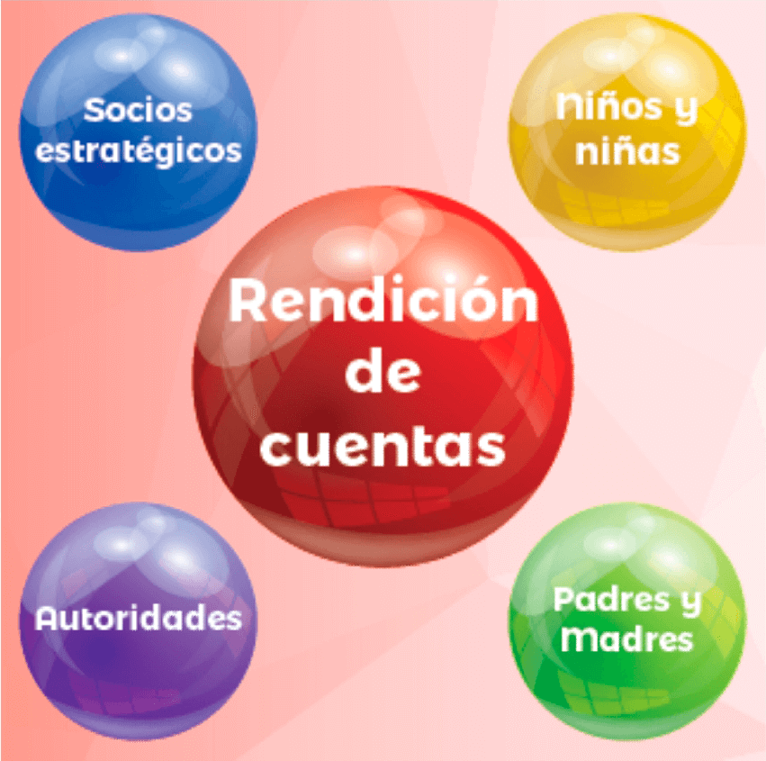

Guia N°5
Modelos de rendición de cuentas
Las Organizaciones como gestoras de fondos tienen la obligación de informar, justificar y responsabilizarse de la actividad económico-financiera que han realizado durante un período de tiempo. Para ello, tienen que elaborar sus cuentas anuales que reflejan la forma en la que se ha desarrollado sus operaciones y los productos específicos que han logrado a través de ello.
¿Por qué Ayuda en Acción debe de rendir cuentas?
- Ayuda en Acción y los socios locales movilizamos personas y recursos en el esfuerzo por hacer realidad nuestra misión y nuestra visión.
- Ayuda en Acción y los Socios Locales, nos relacionamos con distintos interesados que nos reclaman rendición de cuentas.
- No es suficiente solo con decir que estamos teniendo éxito, es necesario demostrar con medios de verificación que nuestras intervenciones son altamente eficientes.
- Las familias auspiciadas necesitan conocer el impacto que produce que sus niños y niñas sean parte del auspiciamiento y cómo estos recursos llevan desarrollo a su comunidad.
¿Cuáles son las ventajas de rendir cuentas?
- Fortalece la credibilidad y confianza de la organización.
- Mejora la calidad y eficiencia de nuestro trabajo.
- Eleva nuestro grado de legitimidad ante la población y nos permite constituirnos en un referente para otros actores.
- Aporta al aprendizaje y madurez organizacional.
- Previene y/o reduce diferentes formas de corrupción y conflicto
- Fortalece las capacidades y el empoderamiento en la población.
¿A quiénes debemos rendir cuentas?
- Socios y socias.
- Donantes.
- Población atendida.
- Niños y niñas auspiciadas.
- Socios con quienes compartimos responsabilidades.
- Instancias gubernamentales.
Se definen cuatro componentes para asegurar la rendición de cuentas y la transparencia, los cuales deben ser asegurados tanto en nuestras relaciones con otros actores a nivel externo, así como al interior de Ayuda en Acción.
- Brindar información clara y oportuna sobre nuestro quehacer.
- Asegurar la participación y la toma de decisiones de los diferentes actores en nuestro quehacer.
- Establecer mecanismos para la retroalimentación mutua
- Fortalecer la gestión de la calidad.
¿Cómo haremos los procesos de rendición de cuentas?
Ayuda en Acción asume el compromiso de rendir cuentas para asegurar que las personas con las cuales trabajamos entienden y se comprometen con el proceso de desarrollo que se impulsa desde el consorcio, para asegurar que el desarrollo sostenible genere calidad de vida digna para las personas y que transforme positivamente la vida de las niñas y los niños.
Las esferas en las cuales Ayuda en Acción rendirá cuentas, están representados por:

br>Rendición de cuentas con niños y niñas.
Ayuda en Acción considera importante dar a conocer a niñas y niños (con especial énfasis en niñez auspiciada) las acciones que se han emprendido durante un período de tiempo en cada ADT, conscientes que las niñas y los niños tienen derecho a conocer la forma en que se invierten los recursos y como estos transforman su entorno y sus vidas.
Los juegos lúdicos a usar son:
- La Carrera del Vínculo solidario.
- El juego de memoria.
- La pesca solidaria.
- Los Conos y Aros del Vínculo Solidario.
- La ruleta de los derechos.
- El Sombrero Piquetero.
Las rondas del conocimiento.
Mediante canciones y juegos, aseguramos que las niñas y los niños
reflexionen acerca de la efectividad de nuestras intervenciones, procurando
de una manera lúdica, internalizar el accionar de Ayuda en Acción.
El foro de la rendición de cuentas.
Este espacio es esencial para lograr la participación auténtica de niñas
y niños, consiste en un evento en el que las autoridades y la niñez, se
sientan en un solo espacio para demandar el cumplimiento de derechos.
Es característico que las niñas y los niños hagan sus demandas, las
autoridades escuchan, responden a las inquietudes y asumen el
compromiso de asegurar el cumplimiento de los derechos de la niñez.
La feria de la rendición de cuentas.
Espacios comunitarios en donde a través de múltiples actividades se
involucra a las y los interesados de la comunidad, en un proceso de
rendición de cuentas que implica difundir información, obtener el nivel de
percepción y aceptación de nuestras acciones.
Rendición de cuentas con padres y madres de familia.
Las madres y padres de familia son una figura importante en la dinámica comunitaria y en el desarrollo de nuestras acciones, son con ellos y ellas que nos coordinamos para asegurar la actualización de la información de niños y niñas y además la recepción y envío de mensaje a los auspiciadores.
Para hacer rendición de cuentas con padres y madres de familia, desarrollaremos las siguientes acciones:
- Asambleas Comunitarias:
- Ferias de rendición de cuentas.
- Boletines informativos:
- Spots Radiales.
Rendición de cuentas con autoridades.
Los procesos de rendición de cuentas con autoridades, representa la posibilidad de consolidar el compromiso de las autoridades locales en continuar facilitando y apoyando el trabajo implementado por Ayuda en Acción.
La importancia de la rendición de cuentas con las autoridades, es que también se obligan a desarrollar el mismo proceso desde las autoridades a la comunidad.
Para los procesos de rendición de cuentas con autoridades, se pueden tomar en cuenta los siguientes modelos de trabajo:
- Reuniones ejecutivas de rendición de cuentas.
- Informe de resultado.
- Sistematización mediante productos audiovisuales.
Rendición de cuentas con socios estratégicos.
En Ayuda en Acción, los socios estratégicos representan una dimensión importante, reconocemos que son las estructuras con las cuales coordinamos acciones y desarrollamos trabajos en conjunto, posibilitan lograr un mayor impacto en la vida de las niñas y los niños.
Un socio estratégico es un ente que comparte nuestra visión y misión y se compromete en contribuir al logro de nuestros objetivos. Asumen nuestros valores y principios y actúan en función de ello, aseguran el incremento en la escala de nuestras operaciones y posibilitan la construcción de oportunidades y de una sociedad más justa.
Con los socios estratégicos, se seguirá la misma metodología de rendición de cuentas que se sigue con las autoridades, recordando que las tres grandes actividades a desarrollar son:
- Reuniones ejecutivas de rendición de cuentas.
- Informe de resultado.
- Sistematización mediante productos audiovisuales.